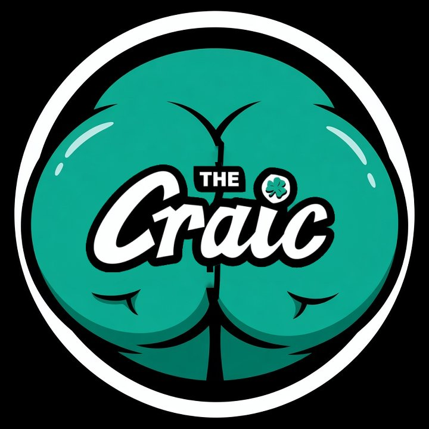

THE CRACK
POWER SLAP 25 · BEYOND THE ROUNDS

The window was open. Maybe for the crisp October breeze, maybe so the onions wouldn’t get to my eyes. I don’t remember. I just know it wasn’t the onions that got me. It was hearing guys I look up to laugh about athletes dying.
I washed my hands, pulled my phone out, and ran it back. I had to make sure I’d heard it right.
That was the critically acclaimed show The Crack. It’s spelled Craic, but out of respect I want to ensure proper enunciation, I will spell it the way it sounds: The Crack. Jokes from Petesy are expected. But Ben and Chuck are wizards with words, perhaps fallen into the dark arts. Because it was Ben who began the sorcery.
They brought up the news that a missile had hit an airport and tried to make it comedic. They even played a clip saying Abu Dhabi was about 500 miles away. Then Ben called it “the airport where you go in and out of if you’re coming there for an event.” Petesy said they’re bombing it daily. Ben set it up: “Can you imagine if you died getting blown up to go to a Power Slap event? That’d be the most ignominious end one could imagine.” Then Ben’s punchline: “Please tell them I died masturbating in some weird way. Because that will be less embarrassing.” At the end of the show they came back to it: “shortly after Dana White is blown up by a cruise missile going to a Power Slap event.”
Here’s the map they ignored. The airport was King Khalid International in Riyadh, Saudi Arabia. The Houthis hit it with a cruise missile on October 10. Power Slap isn’t in Riyadh. It’s in Abu Dhabi, a different country, roughly 500 miles away. That’s about the drive from Chicago to Nashville. Abu Dhabi has its own airport, Zayed International. That one was hit back in February when the war started. Abu Dhabi authorities said debris from a drone shot down over Zayed killed a man and injured seven people.
The UFC flew into Abu Dhabi on July 25 and ran Ankalaev vs. Guskov at Etihad Arena. On The Crack that week the war never came up, not for the UFC, not for the WWE show TKO had put on in Riyadh in June. It was just “Big Ank, he’s back, baby.” That same week Steve Erceg, who was fighting on the Abu Dhabi card, told reporters, “It’s a scary thing to think that there could be drones flying around.” The fighter was worried. The show didn’t give it attention, I guess it wasn’t funny then. They acted like an airport 500 miles away was magically on the same block as the arena while the earlier closer risks for the UFC and WWE didn’t make the news script. That’s not a joke anymore. That’s anti Power Slap propaganda.
Making that big of a leap, with that few details, just to joke about athletes, fans, friends and family dying is more than ignominious. It’s unconscionable. That stung more than the onions ever could.
Would it have been as funny if it happened here at home? Headline reading “Power Slap Founder Gunned Down by Drones.” The White House, where, according to the Justice Department, the FBI already busted a group allegedly planning a drone attack on the Freedom 250 card Dana put on. Petesy’s hot take on The Ariel Helwani Show in January was that the White House card wouldn’t happen because tensions and safety would get in the way. The biggest event in the history of MMA, and he didn’t think it would be safe enough. Maybe Petesy just doesn’t believe in the American Spirit, but the irony is hard to miss. Nobody would be laughing at that headline. Except maybe a broken soul.
Maybe it’s all a bit. But a bit still needs the facts right, and they mislabeled the map. Once the details are wrong the joke collapses, and what’s left is just mocking tragedy and hope. Maybe they can’t tell where the sports end, the entertainment starts, and where the news is supposed to be.
Abu Dhabi didn’t get more dangerous between July and October. If anything it got quieter, but war is hell regardless of what month. They couldn’t find Abu Dhabi on a map, but they found it on the Power Slap calendar. It’s easy to sell a story when the story writes itself. Ben and Chuck should know better than anybody. They came up when MMA was the joke. Fighters had to be crazy, it was a freak show, and you’d be stupid to get in a cage and try to hurt somebody, then act surprised when you got hurt. Now the slap athletes are the freaks doing something nobody on The Crack would have the nerve to try.
When I went to Louisville for Nassourdine vs. Cannonier I stayed at the 21c, which is also a contemporary art museum. I’d never really been in one. A lot of the pieces turned my stomach because they challenged what I thought was right. They showed me the side of people who lost wars and the side of people I’d been told were the enemy. After I stood with it, I couldn’t help but feel a hint of empathy. Even the enemy is human. I can relate to their anger, pain, struggle, and hope.
I expect journalists to do something similar. Find the human and show me something I didn’t want to see, and I don’t mean in The Crack. Not the low-hanging fruit and the giggling. If that’s all I wanted I’d just scroll burner accounts all day.
There were cracks in their perspective, and delivery. We all know what comes out of a dirty crack, something stinky. Good thing I had that window open.
#PowerSlap25